Chapter 4 Pipeline
本次课程主要以测试数据为例，实际展示和操作基于Seurat的单细胞测序数据的基本分析流程。
4.1 数据准备
4.1.1 下载测试数据
本教程分析数据10X单细胞2700个细胞的PBMC数据，下载地址：
https://cf.10xgenomics.com/samples/cell/pbmc3k/pbmc3k_filtered_gene_bc_matrices.tar.gz
dir_10x <- './data/pbmc3k_filtered_gene_bc_matrices/filtered_gene_bc_matrices/hg19/'
list.files(dir_10x)## [1] "barcodes.tsv" "genes.tsv" "matrix.mtx"4.1.2 载入表达矩阵
library(Seurat)
library(ggplot2)
## 直接读取表达矩阵文件
mat <- Read10X(dir_10x)
# mat <- read.table('../pbmc3k_filtered_gene_bc_matrices/filtered_gene_bc_matrices/SingleCell_matrix.tsv', header=T, row.names=1, sep='\t', check.names=F )
mat[1:5, 1:3]## 5 x 3 sparse Matrix of class "dgCMatrix"
## AAACATACAACCAC-1 AAACATTGAGCTAC-1 AAACATTGATCAGC-1
## MIR1302-10 . . .
## FAM138A . . .
## OR4F5 . . .
## RP11-34P13.7 . . .
## RP11-34P13.8 . . .4.2 数据预处理
数据预处理过程主要包括：
- 基于QC指标的细胞和基因过滤
- 数据标准化
- 数据归一化
- 高变基因选择
- 数据降维
4.2.1 构建Seurat数据对象
PRO <- CreateSeuratObject(count = mat, project = 'PBMC')## Warning: Feature names cannot have underscores ('_'), replacing with dashes
## ('-')PRO## An object of class Seurat
## 32738 features across 2700 samples within 1 assay
## Active assay: RNA (32738 features, 0 variable features)# 每个基因至少在5个细胞中表达
# 每个细胞至少检测到300个基因
PRO1 <- CreateSeuratObject(count = mat, project = 'PBMC', min.cells = 5, min.features = 300 )## Warning: Feature names cannot have underscores ('_'), replacing with dashes
## ('-')PRO1## An object of class Seurat
## 12565 features across 2685 samples within 1 assay
## Active assay: RNA (12565 features, 0 variable features)PRO <- RenameCells(PRO, add.cell.id='PBMC')
head(PRO@meta.data)## orig.ident nCount_RNA nFeature_RNA
## PBMC_AAACATACAACCAC-1 PBMC 2421 781
## PBMC_AAACATTGAGCTAC-1 PBMC 4903 1352
## PBMC_AAACATTGATCAGC-1 PBMC 3149 1131
## PBMC_AAACCGTGCTTCCG-1 PBMC 2639 960
## PBMC_AAACCGTGTATGCG-1 PBMC 981 522
## PBMC_AAACGCACTGGTAC-1 PBMC 2164 7824.2.2 多个单细胞矩阵合并
当有多个单细胞样本需要合并分析时，可基于单个样本构建的Seurat数据对象进行合并。
# Only for test.
# paths = c(path1, path2, path3, ... )
mats = c(dir_10x, dir_10x, dir_10x)
sc_list <- list()
for ( i in 1:length(mats) ){
name <- paste0('sample_',i)
mat_i <- Read10X( mats[i] )
PRO_i <- CreateSeuratObject(mat_i, project= name, min.cells = 5, min.features = 200 )
PRO_i <- RenameCells(PRO_i, add.cell.id= name )
sc_list <- c(sc_list, PRO_i)
}
sc_list## [[1]]
## An object of class Seurat
## 12572 features across 2700 samples within 1 assay
## Active assay: RNA (12572 features, 0 variable features)
##
## [[2]]
## An object of class Seurat
## 12572 features across 2700 samples within 1 assay
## Active assay: RNA (12572 features, 0 variable features)
##
## [[3]]
## An object of class Seurat
## 12572 features across 2700 samples within 1 assay
## Active assay: RNA (12572 features, 0 variable features)PRO_merge <- Reduce(merge, sc_list)
PRO_merge## An object of class Seurat
## 12572 features across 8100 samples within 1 assay
## Active assay: RNA (12572 features, 0 variable features)rm(list=c('PRO_merge','sc_list','PRO_i','mat_i','mat'))4.2.3 单细胞表达矩阵质控
单细胞分析之前，需要筛选得到高质量，高可靠性的细胞，保证后续分析结果的准确性。 常用的过滤条件包括三个：
- 单个细胞的UMI数
- 单个细胞中检测到的gene数
- 低质量细胞或者空的droplet液滴含有的少量基因
- doublets双胞体或多胞体含有很高的gene counts
- 线粒体基因含量比例
- 低质量或者死亡细胞含有很高的线粒体基因
- 不同组织正常线粒体含量范围有差异
4.2.3.1 通过单个细胞count数和feature数分布的可视化帮助确定过滤条件的阈值
head(PRO@meta.data)## orig.ident nCount_RNA nFeature_RNA
## PBMC_AAACATACAACCAC-1 PBMC 2421 781
## PBMC_AAACATTGAGCTAC-1 PBMC 4903 1352
## PBMC_AAACATTGATCAGC-1 PBMC 3149 1131
## PBMC_AAACCGTGCTTCCG-1 PBMC 2639 960
## PBMC_AAACCGTGTATGCG-1 PBMC 981 522
## PBMC_AAACGCACTGGTAC-1 PBMC 2164 782VlnPlot(PRO, features=c('nCount_RNA','nFeature_RNA') , pt.size=0.1 )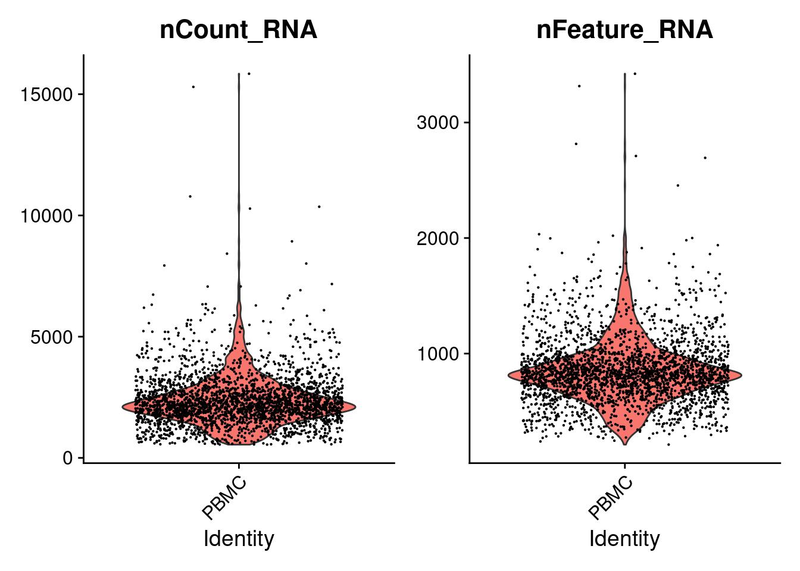
4.2.3.2 单个细胞线粒体基因和核糖体基因含量统计
## 在人类基因组中，线粒体基因命名规则是以"MT-"为开头
mt.genes <- rownames(PRO)[grep("^MT-",rownames(PRO), ignore.case = TRUE)]
PRO$percent.mt <- PercentageFeatureSet(PRO, features = mt.genes )
## 统计核糖体基因含量，同样需要知道核糖体基因的名字规则"RPS"或"RPL"
rb.genes <- rownames(PRO)[grep("^RP[SL]",rownames(PRO), ignore.case = TRUE)]
PRO$percent.rb <- PercentageFeatureSet(PRO, features = rb.genes )
head(PRO@meta.data)## orig.ident nCount_RNA nFeature_RNA percent.mt percent.rb
## PBMC_AAACATACAACCAC-1 PBMC 2421 781 3.0152829 43.65964
## PBMC_AAACATTGAGCTAC-1 PBMC 4903 1352 3.7935958 42.40261
## PBMC_AAACATTGATCAGC-1 PBMC 3149 1131 0.8891712 31.66084
## PBMC_AAACCGTGCTTCCG-1 PBMC 2639 960 1.7430845 24.25161
## PBMC_AAACCGTGTATGCG-1 PBMC 981 522 1.2232416 14.88277
## PBMC_AAACGCACTGGTAC-1 PBMC 2164 782 1.6635860 36.18299VlnPlot(PRO, features=c('percent.mt','percent.rb') , pt.size=0.1 )
4.2.3.3 质控条件之间的相关性展示
p1 = FeatureScatter(PRO, feature1 = "nCount_RNA", feature2 = "nFeature_RNA")
p2 = FeatureScatter(PRO, feature1 = "nCount_RNA", feature2 = "percent.mt")
p1 + p2
4.2.3.4 低质量细胞过滤
基于上面的单细胞质量可视化结果，当存在质量较差的细胞时，为避免低质量细胞对下游分析的影响，需要在表达矩阵中去除这些细胞 使用subset函数用于seurat对象过滤.
PRO0 <- subset(PRO, subset= nCount_RNA> 300 &
nCount_RNA< 10000 &
nFeature_RNA> 200 &
nFeature_RNA< 2500 &
percent.mt< 5 )
PRO0## An object of class Seurat
## 32738 features across 2638 samples within 1 assay
## Active assay: RNA (32738 features, 0 variable features)也可根据细胞表达count百分位数，feature百分位数进行过滤
ncount <- quantile(PRO$nCount_RNA, 0.98)
nfeature <- quantile(PRO$nFeature_RNA, 0.98)
PRO1 <- subset(PRO,
subset= nCount_RNA>200 &
nCount_RNA< ncount &
nFeature_RNA> 300 &
nFeature_RNA< nfeature &
percent.mt< 10 )
PRO1## An object of class Seurat
## 32738 features across 2615 samples within 1 assay
## Active assay: RNA (32738 features, 0 variable features)VlnPlot(PRO, features=c('nCount_RNA','nFeature_RNA','percent.mt') , pt.size=0.1 )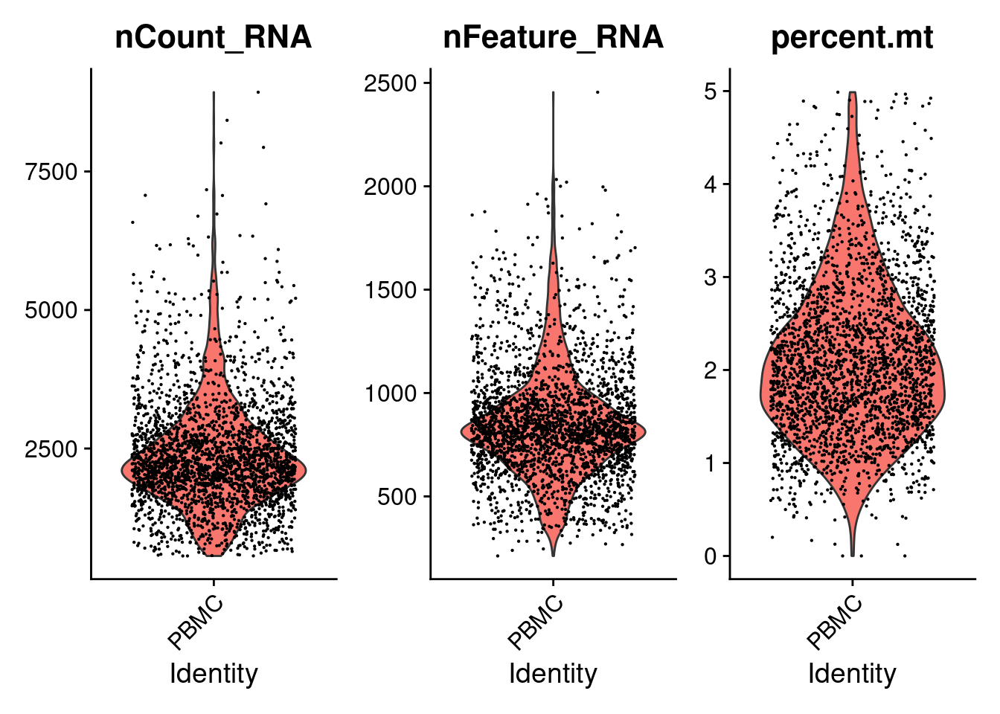
Compare two seurat objects. After filter
VlnPlot(PRO1, features=c('nCount_RNA','nFeature_RNA','percent.mt') , pt.size=0.1 )
4.2.4 单细胞数据标准化和均一化
由于实验和测序步骤都具有随机性，即便是同一细胞在两次捕获测序中得到的深度也不一定相同，因此直接比较原始表达计数得到的差异可能是由于技术偏差造成。 表达矩阵标准化通过对count数进行调整，使获得具有可比性的相对表达丰度。 数据处理的目的：
- 使细胞间表达具有可比性
- 使表达量分布符合统计学分布
4.2.4.1 数据标准化
最常用的方法是针对测序深度进行标准化，使每个细胞具有相同的reads数据量 Seurat默认的标准化方法为 LogNormalize ： 以e为底数，log（每个细胞中基因的nCount_RNA /该细胞内总Count*10000 + 1）
## 默认标准化算法：
## LogNormalize: Feature counts for each cell are divided by the total counts for that cell and multiplied by the scale.factor 10000. This is then natural-log transformed using log1p
PRO_norm <- NormalizeData(object=PRO,
normalization.method= 'LogNormalize',
scale.factor=10000 )
PRO@assays$RNA@data[40:45,30:32]## 6 x 3 sparse Matrix of class "dgCMatrix"
## PBMC_AAATCAACGGAAGC-1 PBMC_AAATCAACTCGCAA-1 PBMC_AAATCATGACCACA-1
## RP11-54O7.17 . . .
## HES4 . . 2
## RP11-54O7.11 . . .
## ISG15 . 12 4
## AGRN . . .
## RP11-54O7.18 . . .PRO_norm@assays$RNA@data[40:45,30:32]## 6 x 3 sparse Matrix of class "dgCMatrix"
## PBMC_AAATCAACGGAAGC-1 PBMC_AAATCAACTCGCAA-1 PBMC_AAATCATGACCACA-1
## RP11-54O7.17 . . .
## HES4 . . 1.765580
## RP11-54O7.11 . . .
## ISG15 . 3.776759 2.369301
## AGRN . . .
## RP11-54O7.18 . . .4.2.4.2 数据归一化
对表达矩阵进行scale处理，scale之后的矩阵每个基因表达均值为0 经过scale之后，所有基因的表达分布基本一致，有助于后续的降维聚类
all.genes <- rownames(PRO_norm)
# the results will be PRO@assays$RNA@scale.data
PRO <- ScaleData(PRO_norm, features = all.genes)## Centering and scaling data matrixPRO@assays$RNA@scale.data[40:45,30:33]## PBMC_AAATCAACGGAAGC-1 PBMC_AAATCAACTCGCAA-1 PBMC_AAATCATGACCACA-1
## RP11-54O7.17 -0.03270500 -0.03270500 -0.03270500
## HES4 -0.23159218 -0.23159218 4.43150027
## RP11-54O7.11 -0.03725250 -0.03725250 -0.03725250
## ISG15 -0.83299934 2.40993395 1.20141353
## AGRN -0.05255092 -0.05255092 -0.05255092
## RP11-54O7.18 0.00000000 0.00000000 0.00000000
## PBMC_AAATCCCTCCACAA-1
## RP11-54O7.17 -0.03270500
## HES4 -0.23159218
## RP11-54O7.11 -0.03725250
## ISG15 -0.83299934
## AGRN -0.05255092
## RP11-54O7.18 0.00000000移除细胞周期等影响因素
s.genes <- cc.genes$s.genes
g2m.genes <- cc.genes$g2m.genes
PRO <- CellCycleScoring(PRO,
s.features = s.genes,
g2m.features = g2m.genes )## Warning: The following features are not present in the object: UHRF1, MLF1IP,
## CASP8AP2, not searching for symbol synonymshead(PRO@meta.data)## orig.ident nCount_RNA nFeature_RNA percent.mt percent.rb
## PBMC_AAACATACAACCAC-1 PBMC 2421 781 3.0152829 43.65964
## PBMC_AAACATTGAGCTAC-1 PBMC 4903 1352 3.7935958 42.40261
## PBMC_AAACATTGATCAGC-1 PBMC 3149 1131 0.8891712 31.66084
## PBMC_AAACCGTGCTTCCG-1 PBMC 2639 960 1.7430845 24.25161
## PBMC_AAACCGTGTATGCG-1 PBMC 981 522 1.2232416 14.88277
## PBMC_AAACGCACTGGTAC-1 PBMC 2164 782 1.6635860 36.18299
## S.Score G2M.Score Phase
## PBMC_AAACATACAACCAC-1 0.07721641 -0.027546191 S
## PBMC_AAACATTGAGCTAC-1 -0.02723808 -0.038481308 G1
## PBMC_AAACATTGATCAGC-1 -0.01832618 0.069915003 G2M
## PBMC_AAACCGTGCTTCCG-1 0.01548134 0.008207127 S
## PBMC_AAACCGTGTATGCG-1 -0.05922341 0.031726222 G2M
## PBMC_AAACGCACTGGTAC-1 -0.05420895 -0.063251247 G1# check vars.to.regress
PRO_cc <- ScaleData(PRO, features = all.genes[1:1000], vars.to.regress = c("S.Score", "G2M.Score") ) ## 耗时较长, 只用了1000个基因用于展示## Regressing out S.Score, G2M.Score## Centering and scaling data matrix4.2.4.3 筛选高变基因
人单细胞RNA-seq数据集可包含多达20000+个基因的表达值。对于一个给定的单细胞数据集，其中有许多基因都不能提供有用信息，并且大多只包含零计数。即使在QC步骤中滤除了这些零计数基因后，单细胞数据集也可能超过15,000个基因； 为了减轻下游分析工具的计算负担、减少数据中的噪声并方便数据可视化，可对数据集基因进行过滤仅保留对数据的变异性具有信息贡献的基因（变化程度大）； 高变基因：在表达矩阵中表达变化大的基因，即在一些细胞中高表达，在另外一些细胞中低表达； 一般使用均值与方差之间的关系来挑选高变基因：
- vst（默认）：首先利用loess回归对log(variance)和log(mean)拟合一条直线，然后利用观测均值和期望方差对基因表达量进行标准化，最后根据标准化后的表达量计算方差；
- mean.var.plot（mvp）: 首先分别计算每个基因的平均表达量和离散情况，然后根据平均表达量将基因们分散到一定数量（默认是20个）的小区间（bin）中，并且计算每个区间的z-score；
- dispersion (disp): 挑选离差值最高的基因
PRO <- FindVariableFeatures(PRO,
selection.method = "vst",
nfeatures = 2000)
head(VariableFeatures(PRO))## [1] "PPBP" "LYZ" "S100A9" "IGLL5" "GNLY" "FTL"LabelPoints(VariableFeaturePlot(PRO), points = head(VariableFeatures(PRO),10) , repel=TRUE)## When using repel, set xnudge and ynudge to 0 for optimal results## Warning: Transformation introduced infinite values in continuous x-axis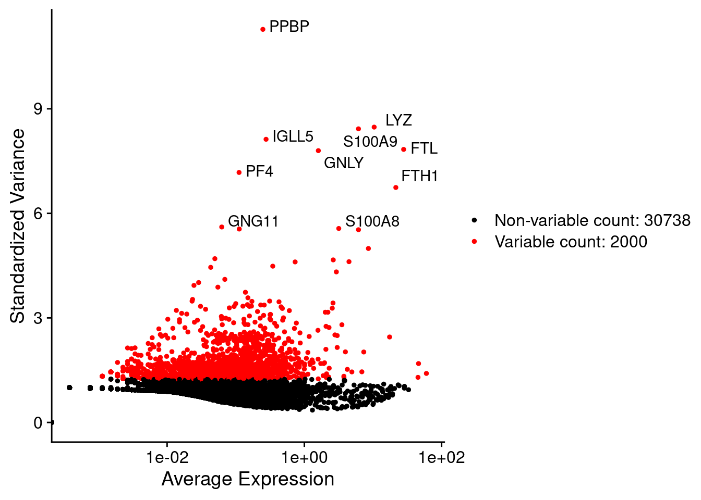
4.2.5 数据降维
降维是通过算法最优地保留原始数据的一些关键属性来将数据投影到更低的维度空间中，便于可视化和后续分析
4.2.5.1 PCA降维
hvg <- VariableFeatures(object = PRO)
PRO <- RunPCA(PRO, features = hvg )## PC_ 1
## Positive: CST3, TYROBP, LST1, AIF1, FTL, FCN1, LYZ, FTH1, S100A9, FCER1G
## TYMP, CFD, LGALS1, S100A8, CTSS, LGALS2, SERPINA1, SPI1, IFITM3, PSAP
## CFP, SAT1, IFI30, COTL1, S100A11, NPC2, LGALS3, GSTP1, PYCARD, NCF2
## Negative: MALAT1, LTB, IL32, CD2, ACAP1, STK17A, CTSW, CD247, CCL5, GIMAP5
## AQP3, GZMA, CST7, TRAF3IP3, MAL, HOPX, ITM2A, GZMK, MYC, GIMAP7
## BEX2, ETS1, LDLRAP1, ZAP70, LYAR, RIC3, TNFAIP8, NKG7, KLRG1, SAMD3
## PC_ 2
## Positive: NKG7, PRF1, CST7, GZMA, GZMB, FGFBP2, CTSW, GNLY, GZMH, SPON2
## CCL4, FCGR3A, CCL5, CD247, XCL2, CLIC3, AKR1C3, SRGN, HOPX, CTSC
## TTC38, S100A4, ANXA1, IL32, IGFBP7, ID2, ACTB, XCL1, APOBEC3G, SAMD3
## Negative: CD79A, MS4A1, TCL1A, HLA-DQA1, HLA-DRA, HLA-DQB1, LINC00926, CD79B, HLA-DRB1, CD74
## HLA-DPB1, HLA-DMA, HLA-DQA2, HLA-DRB5, HLA-DPA1, HLA-DMB, FCRLA, HVCN1, LTB, BLNK
## KIAA0125, P2RX5, IRF8, IGLL5, SWAP70, ARHGAP24, SMIM14, PPP1R14A, FCRL2, C16orf74
## PC_ 3
## Positive: PPBP, PF4, SDPR, SPARC, GNG11, NRGN, GP9, RGS18, TUBB1, CLU
## HIST1H2AC, AP001189.4, ITGA2B, CD9, TMEM40, CA2, PTCRA, ACRBP, MMD, NGFRAP1
## TREML1, F13A1, RUFY1, SEPT5, MPP1, TSC22D1, CMTM5, RP11-367G6.3, MYL9, GP1BA
## Negative: HLA-DQA1, CD79A, CD79B, HLA-DQB1, HLA-DPB1, CD74, HLA-DPA1, MS4A1, HLA-DRB1, HLA-DRB5
## HLA-DRA, HLA-DQA2, TCL1A, LINC00926, HLA-DMB, HLA-DMA, HVCN1, FCRLA, IRF8, BLNK
## KIAA0125, SMIM14, PLD4, P2RX5, IGLL5, SWAP70, LAT2, TMSB10, IGJ, MZB1
## PC_ 4
## Positive: HLA-DQA1, HIST1H2AC, PF4, SDPR, CD79A, CD79B, PPBP, GNG11, SPARC, HLA-DQB1
## MS4A1, CD74, GP9, HLA-DPB1, NRGN, RGS18, PTCRA, CD9, AP001189.4, HLA-DQA2
## CLU, TUBB1, CA2, HLA-DRB1, HLA-DPA1, ITGA2B, TMEM40, HLA-DRA, TCL1A, ACRBP
## Negative: VIM, S100A8, S100A6, S100A4, TMSB10, S100A9, IL32, GIMAP7, S100A10, LGALS2
## RBP7, MAL, FCN1, LYZ, CD2, S100A12, MS4A6A, FYB, S100A11, AQP3
## GIMAP4, FOLR3, ANXA1, MALAT1, AIF1, GIMAP5, IL8, IFI6, TRABD2A, ASGR1
## PC_ 5
## Positive: LTB, VIM, AQP3, PPA1, MAL, KIAA0101, CD2, CORO1B, CYTIP, FYB
## IL32, TRADD, ANXA5, TUBA1B, HN1, TYMS, PTGES3, ITM2A, COTL1, GPR183
## ACTG1, TNFAIP8, ATP5C1, TRAF3IP3, ZWINT, GIMAP4, PRDX1, ABRACL, NGFRAP1, LDLRAP1
## Negative: GZMB, FGFBP2, NKG7, GNLY, PRF1, CCL4, CST7, SPON2, GZMA, CLIC3
## GZMH, XCL2, CTSW, TTC38, AKR1C3, CCL5, IGFBP7, XCL1, S100A8, CCL3
## TYROBP, HOPX, CD160, HAVCR2, S100A9, FCER1G, PTGDR, LGALS2, RBP7, S100A12# print(PRO@reductions$pca)
VizDimLoadings(PRO, dims = 1:2, reduction = "pca")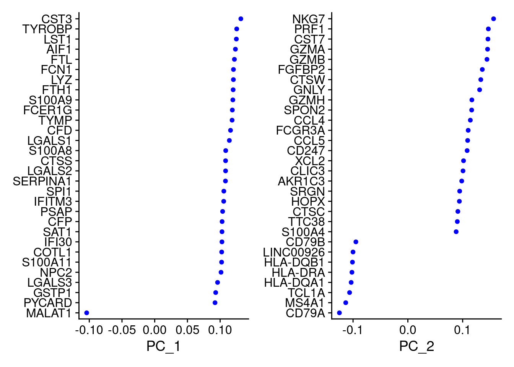
DimHeatmap(PRO, dims = 1:6, cells = 500, balanced = TRUE)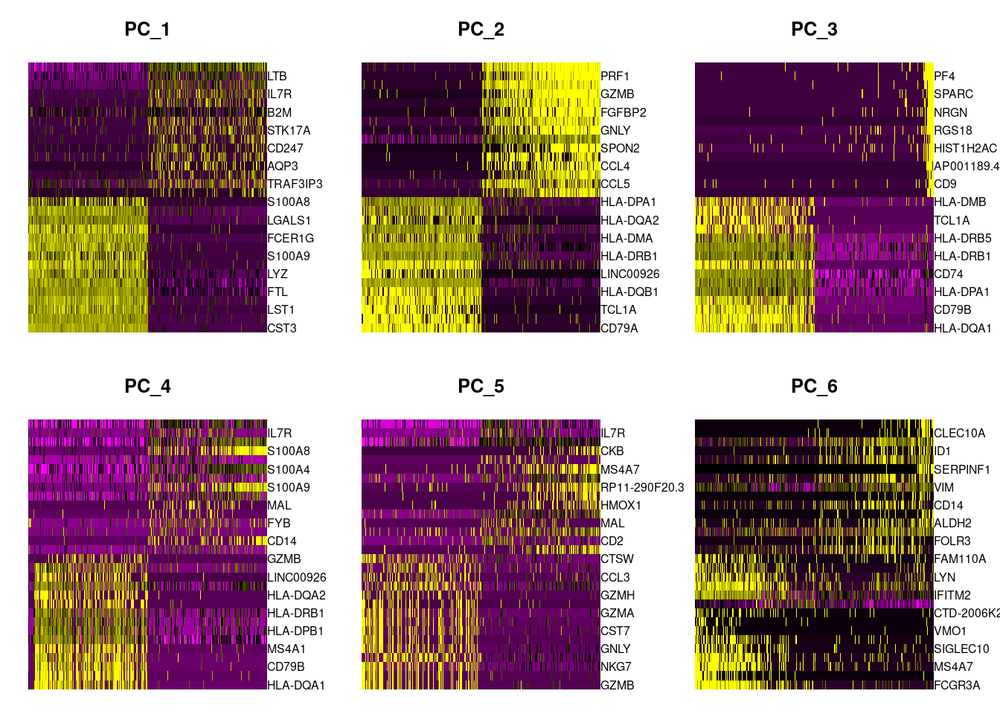
DimPlot(PRO, reduction = "pca")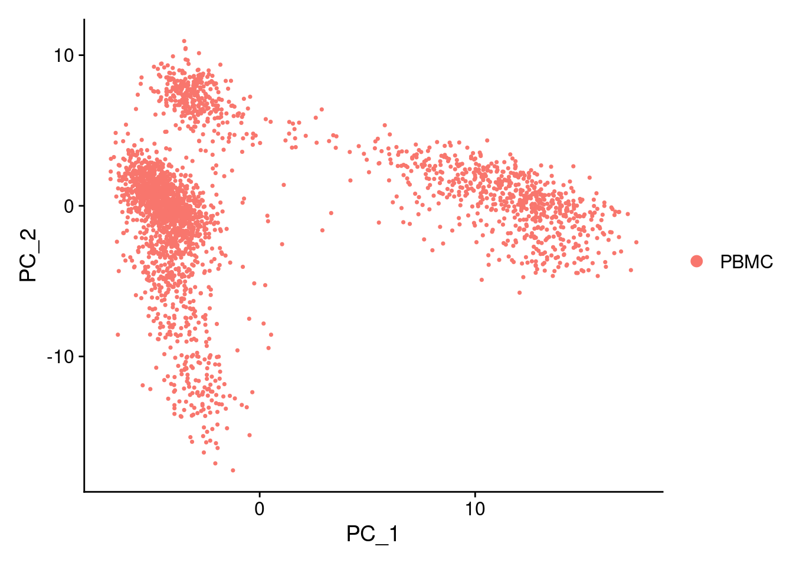
4.2.5.2 选择维度
维度的选择标准是再保证足够的信息同时减少噪音
ElbowPlot(PRO)
PRO_sub <- subset(PRO, downsample=200) ## 耗时较长，downsample矩阵进行展示
PRO_sub <- ScaleData(PRO_sub, features = all.genes)## Centering and scaling data matrixPRO_sub <- JackStraw(PRO_sub, num.replicate = 100)
PRO_sub <- ScoreJackStraw(PRO_sub, dims = 1:20)
JackStrawPlot(PRO_sub, dims = 1:20)## Warning: Removed 35687 rows containing missing values (geom_point).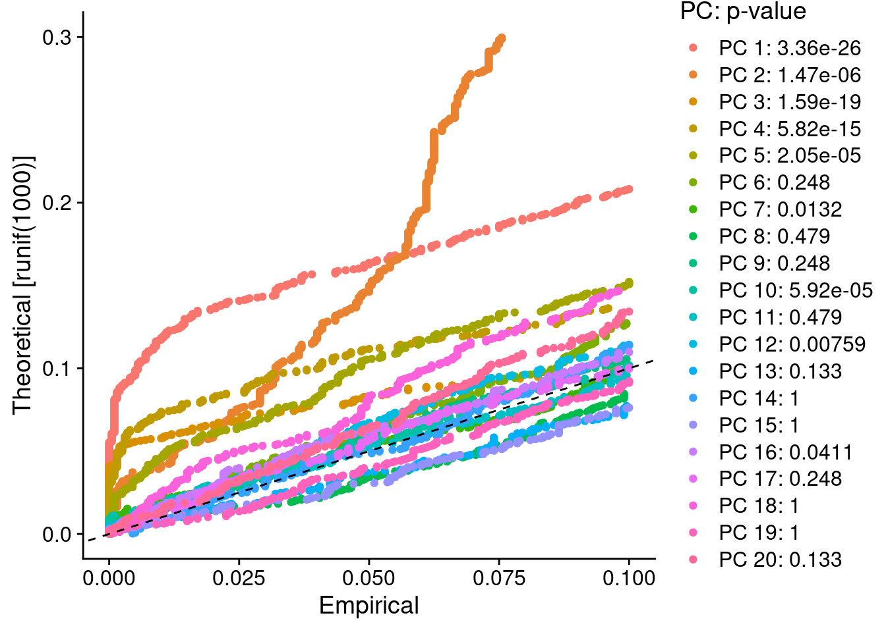
4.3 单细胞聚类
基于细胞基因表达谱的相似性,将细胞聚类成簇通常是任何单细胞分析的第一个中间结果。细胞聚类可以帮助我们推断数据集中各细胞的身份。
4.3.1 聚类分簇
表达谱的相似性采用降维之后表达空间上的欧氏距离度量。
# 使用k最近邻法来对细胞进行聚类（K-nearest neighbor (KNN) graph），具有相似基因表达模式的细胞之间绘制边,然后尝试将这张图划分为高度相互关联的“群体”
PRO <- FindNeighbors(PRO, reduction = "pca", dims = 1:10)## Computing nearest neighbor graph## Computing SNN# 使用多分辨率模块优化算法，迭代地将细胞分组
PRO <- FindClusters(PRO, resolution = 0.5)## Modularity Optimizer version 1.3.0 by Ludo Waltman and Nees Jan van Eck
##
## Number of nodes: 2700
## Number of edges: 98274
##
## Running Louvain algorithm...
## Maximum modularity in 10 random starts: 0.8707
## Number of communities: 9
## Elapsed time: 0 secondshead(PRO@meta.data)## orig.ident nCount_RNA nFeature_RNA percent.mt percent.rb
## PBMC_AAACATACAACCAC-1 PBMC 2421 781 3.0152829 43.65964
## PBMC_AAACATTGAGCTAC-1 PBMC 4903 1352 3.7935958 42.40261
## PBMC_AAACATTGATCAGC-1 PBMC 3149 1131 0.8891712 31.66084
## PBMC_AAACCGTGCTTCCG-1 PBMC 2639 960 1.7430845 24.25161
## PBMC_AAACCGTGTATGCG-1 PBMC 981 522 1.2232416 14.88277
## PBMC_AAACGCACTGGTAC-1 PBMC 2164 782 1.6635860 36.18299
## S.Score G2M.Score Phase RNA_snn_res.0.5
## PBMC_AAACATACAACCAC-1 0.07721641 -0.027546191 S 0
## PBMC_AAACATTGAGCTAC-1 -0.02723808 -0.038481308 G1 3
## PBMC_AAACATTGATCAGC-1 -0.01832618 0.069915003 G2M 0
## PBMC_AAACCGTGCTTCCG-1 0.01548134 0.008207127 S 5
## PBMC_AAACCGTGTATGCG-1 -0.05922341 0.031726222 G2M 6
## PBMC_AAACGCACTGGTAC-1 -0.05420895 -0.063251247 G1 0
## seurat_clusters
## PBMC_AAACATACAACCAC-1 0
## PBMC_AAACATTGAGCTAC-1 3
## PBMC_AAACATTGATCAGC-1 0
## PBMC_AAACCGTGCTTCCG-1 5
## PBMC_AAACCGTGTATGCG-1 6
## PBMC_AAACGCACTGGTAC-1 0levels(PRO)## [1] "0" "1" "2" "3" "4" "5" "6" "7" "8"4.3.2 单细胞聚类可视化
Seurat提供了t-SNE和UMAP两种降维可视化算法
# UMAP
PRO <- RunUMAP(PRO,
reduction = "pca",
dims = 1:10,
verbose=TRUE )## Warning: The default method for RunUMAP has changed from calling Python UMAP via reticulate to the R-native UWOT using the cosine metric
## To use Python UMAP via reticulate, set umap.method to 'umap-learn' and metric to 'correlation'
## This message will be shown once per session## 22:08:59 UMAP embedding parameters a = 0.9922 b = 1.112## 22:08:59 Read 2700 rows and found 10 numeric columns## 22:08:59 Using Annoy for neighbor search, n_neighbors = 30## 22:08:59 Building Annoy index with metric = cosine, n_trees = 50## 0% 10 20 30 40 50 60 70 80 90 100%## [----|----|----|----|----|----|----|----|----|----|## **************************************************|
## 22:08:59 Writing NN index file to temp file /tmp/RtmpPS3VH7/filec7faf3146c518
## 22:08:59 Searching Annoy index using 1 thread, search_k = 3000
## 22:09:00 Annoy recall = 100%
## 22:09:00 Commencing smooth kNN distance calibration using 1 thread
## 22:09:01 Initializing from normalized Laplacian + noise
## 22:09:01 Commencing optimization for 500 epochs, with 107914 positive edges
## 22:09:04 Optimization finishedDimPlot(PRO, reduction = "umap", label=TRUE)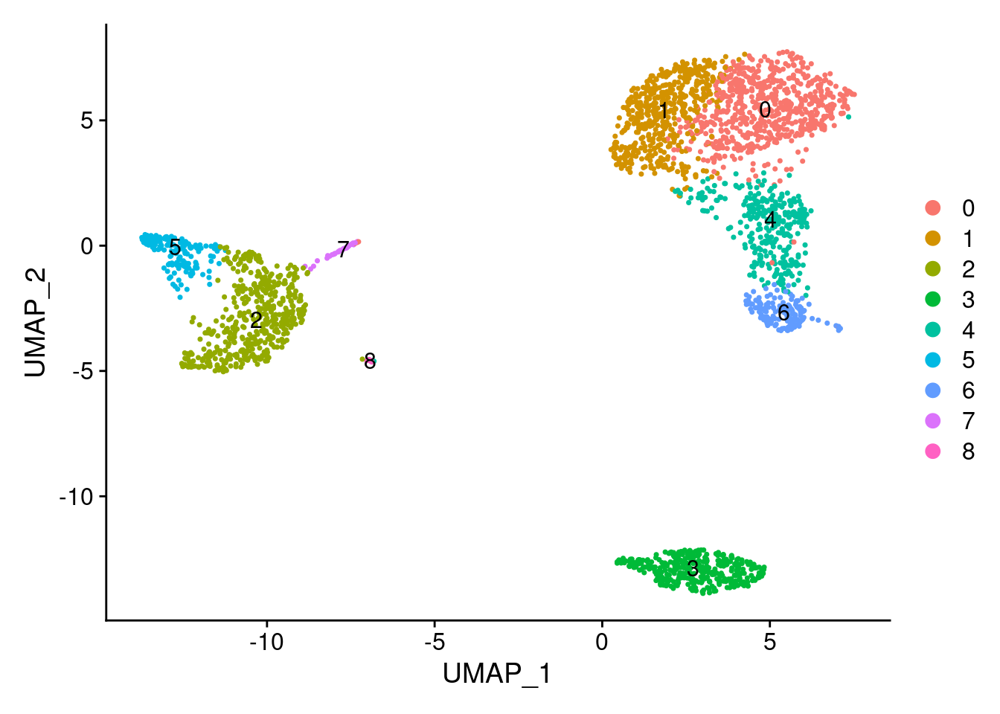
head( PRO@reductions$umap@cell.embeddings )## UMAP_1 UMAP_2
## PBMC_AAACATACAACCAC-1 4.075107 3.848914
## PBMC_AAACATTGAGCTAC-1 4.548936 -12.860142
## PBMC_AAACATTGATCAGC-1 7.082211 5.789762
## PBMC_AAACCGTGCTTCCG-1 -11.915672 -1.153419
## PBMC_AAACCGTGTATGCG-1 4.301518 -2.344230
## PBMC_AAACGCACTGGTAC-1 3.169024 6.136975# tSNE
PRO <- RunTSNE(PRO,
reduction = "pca",
dims = 1:10)
DimPlot(PRO, reduction = "tsne", label=TRUE)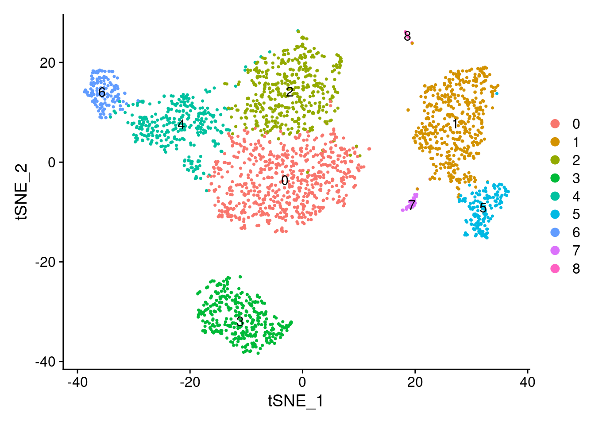
head( Embeddings(object = PRO, reduction = "tsne") )## tSNE_1 tSNE_2
## PBMC_AAACATACAACCAC-1 8.512116 -12.309254
## PBMC_AAACATTGAGCTAC-1 -23.416572 -16.864179
## PBMC_AAACATTGATCAGC-1 9.518324 -28.401356
## PBMC_AAACCGTGCTTCCG-1 -14.980453 29.875462
## PBMC_AAACCGTGTATGCG-1 35.141969 4.994994
## PBMC_AAACGCACTGGTAC-1 -5.562793 -11.128738DimPlot(PRO, reduction = "umap", cols=c('red','pink',3:10))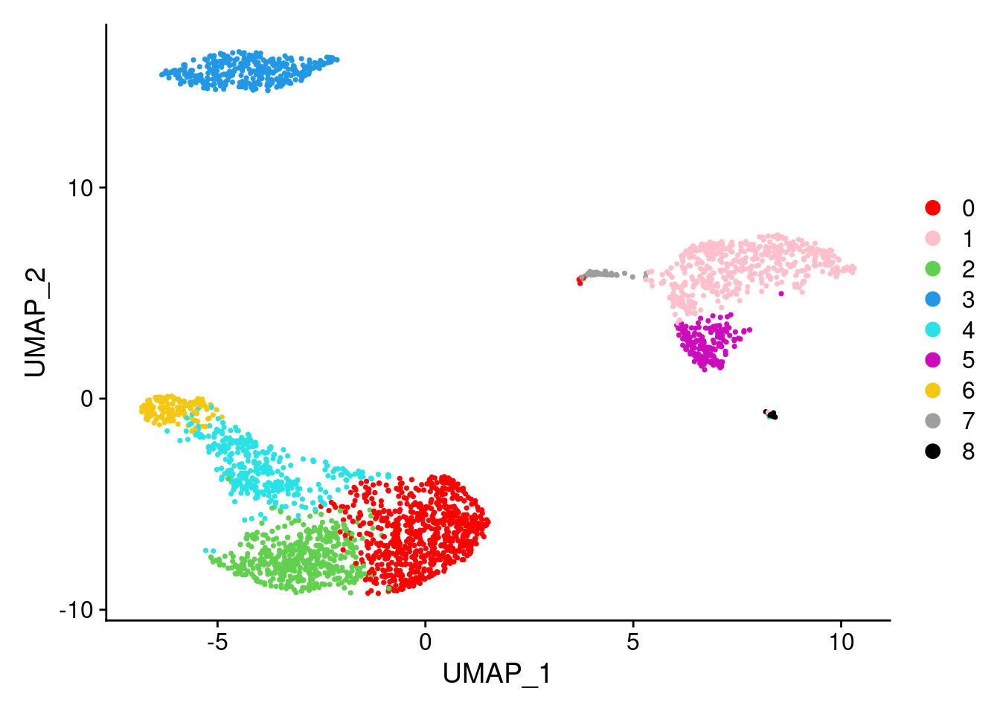
4.4 单细胞聚类簇类型鉴定
在基因水平上，对每个簇的marker gene进行分析，这些marker gene代表了细胞簇的特征，可帮助定义细胞簇有生物学意义的标签。
4.4.1 细胞簇差异基因分析
c1_marker <- FindMarkers(PRO,
ident.1= 0 ,
min.pct= 0.1,
logfc.threshold= 0.25 )
head(c1_marker)## p_val avg_log2FC pct.1 pct.2 p_val_adj
## LDHB 3.622412e-112 1.117887 0.956 0.579 1.185905e-107
## LTB 2.499170e-108 1.232183 0.973 0.614 8.181783e-104
## IL32 2.979633e-102 1.108300 0.928 0.434 9.754724e-98
## CD3D 1.859279e-95 1.005110 0.907 0.396 6.086907e-91
## IL7R 2.391706e-84 1.186580 0.723 0.299 7.829965e-80
## HLA-DRB1 4.620493e-84 -2.759261 0.160 0.553 1.512657e-79all_markers <- FindAllMarkers(PRO,
only.pos = TRUE,
min.pct= 0.1,
logfc.threshold= 0.25)## Calculating cluster 0## Calculating cluster 1## Calculating cluster 2## Calculating cluster 3## Calculating cluster 4## Calculating cluster 5## Calculating cluster 6## Calculating cluster 7## Calculating cluster 8head(all_markers)## p_val avg_log2FC pct.1 pct.2 p_val_adj cluster gene
## LDHB 3.622412e-112 1.1178874 0.956 0.579 1.185905e-107 0 LDHB
## LTB 2.499170e-108 1.2321832 0.973 0.614 8.181783e-104 0 LTB
## IL32 2.979633e-102 1.1083000 0.928 0.434 9.754724e-98 0 IL32
## CD3D 1.859279e-95 1.0051104 0.907 0.396 6.086907e-91 0 CD3D
## IL7R 2.391706e-84 1.1865800 0.723 0.299 7.829965e-80 0 IL7R
## CD3E 1.562395e-80 0.9675184 0.822 0.372 5.114968e-76 0 CD3Elibrary(dplyr)
top_markers <- all_markers %>% group_by( cluster) %>% top_n( n = 5, wt= avg_log2FC )
top_markers## # A tibble: 45 x 7
## # Groups: cluster [9]
## p_val avg_log2FC pct.1 pct.2 p_val_adj cluster gene
## <dbl> <dbl> <dbl> <dbl> <dbl> <fct> <chr>
## 1 3.62e-112 1.12 0.956 0.579 1.19e-107 0 LDHB
## 2 2.50e-108 1.23 0.973 0.614 8.18e-104 0 LTB
## 3 2.39e- 84 1.19 0.723 0.299 7.83e- 80 0 IL7R
## 4 1.01e- 78 1.28 0.406 0.089 3.31e- 74 0 AQP3
## 5 2.13e- 63 1.14 0.598 0.227 6.96e- 59 0 CD2
## 6 5.64e- 76 1.34 0.471 0.129 1.85e- 71 1 CCR7
## 7 1.24e- 37 1.00 0.34 0.121 4.05e- 33 1 LEF1
## 8 2.05e- 37 1.07 0.344 0.125 6.70e- 33 1 PRKCQ-AS1
## 9 1.82e- 34 0.934 0.617 0.382 5.95e- 30 1 NOSIP
## 10 3.22e- 20 1.12 0.24 0.098 1.05e- 15 1 LDLRAP1
## # … with 35 more rowsDoHeatmap(PRO, features = top_markers$gene) + NoLegend()
4.4.2 marker基因展示
marker基因为已知的在特定细胞中特异性表达得基因 marker基因收集：
- 已知的数据库（CellMarker及PanglaoDB等）
- 已发表的文献
marker_genes = c("MS4A1", "GNLY", "CD3E", "CD14", "FCER1A", "FCGR3A", "LYZ", "PPBP", "CD8A")
VlnPlot(PRO, features =marker_genes, pt.size= 0)
FeaturePlot(PRO, features = marker_genes )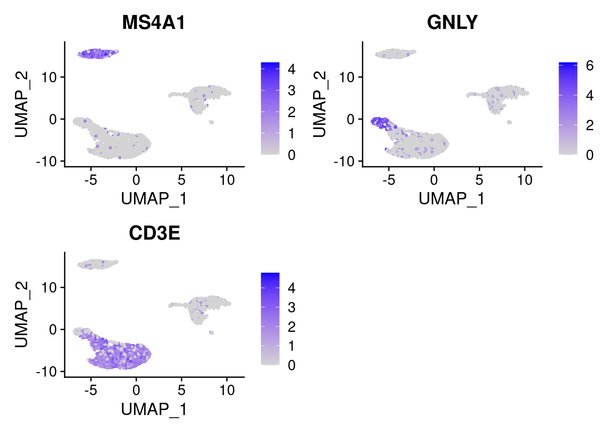
RidgePlot(PRO, features = marker_genes )
DotPlot(PRO, features = marker_genes ) + theme(axis.text.x = element_text(angle = 45,hjust=1))
4.4.3 细胞类型标签注释
根据细胞中特异性表达marker确定细胞簇类型
cluster_cell <- c("Naive CD4 T", "Memory CD4 T", "CD14+ Mono", "B", "CD8 T", "FCGR3A+ Mono", "NK", "DC", "Platelet")
names(cluster_cell) <- levels(PRO)
cluster_cell## 0 1 2 3 4
## "Naive CD4 T" "Memory CD4 T" "CD14+ Mono" "B" "CD8 T"
## 5 6 7 8
## "FCGR3A+ Mono" "NK" "DC" "Platelet"PRO <- RenameIdents(PRO, cluster_cell)
DimPlot(PRO, reduction = "umap", label = TRUE, pt.size = 0.5) + NoLegend()
4.4.4 细胞类型比例可视化
# PRO@active.ident
num_tab <- table( Idents(PRO), PRO$orig.ident )
num_tab##
## PBMC
## Naive CD4 T 657
## Memory CD4 T 512
## CD14+ Mono 490
## B 349
## CD8 T 327
## FCGR3A+ Mono 161
## NK 154
## DC 36
## Platelet 14freq_tab <- prop.table(x= num_tab , margin=2)
freq_tab##
## PBMC
## Naive CD4 T 0.243333333
## Memory CD4 T 0.189629630
## CD14+ Mono 0.181481481
## B 0.129259259
## CD8 T 0.121111111
## FCGR3A+ Mono 0.059629630
## NK 0.057037037
## DC 0.013333333
## Platelet 0.005185185barplot(height=freq_tab, width=1, xlim=c(0,5), col=c(1:10), legend= rownames(freq_tab), xlab="")
# 保存分析结果为rds文件
# saveRDS(PRO, file='PBMC_3K.rds')
# pro <- readRDS('PBMC_3K.rds')4.4.5 细胞类型marker基因展示
feature1 <- c('CD79A','MS4A1','HLA-DQA1','HLA-DQB1','CD14','VCAN','CD3D','IL7R','CLEC10A','GP9')
# 堆叠小提琴图
VlnPlot(PRO, features= feature1, stack = TRUE, flip = T, fill.by='ident')
# 气泡图
DotPlot(object = PRO, features=feature1, cluster.idents=T) + theme(axis.text.x = element_text(angle = 45,hjust=1))
# 分类型气泡图
feature2 <- list(Bcell = c("CD19","CD79A","CD79B","MS4A1"),
Mono = c("CD14","VCAN","FCN1"),
Tcell = c("CD3D","CD3E","CD3G","IL7R","TRAC","TRGC2","TRDC", "CD8A", "CD8B", "CD4"),
DC = c("HLA-DQA1", "HLA-DQB1", "HLA-DRB3","CLEC10A","CLEC9A"),
platelet = c("GP9","PF4") )
DotPlot(object = PRO, features=feature2, cluster.idents=T) + theme(axis.text.x = element_text(angle = 45,hjust=1) )## Warning in FetchData(object = object, vars = features, cells = cells): The
## following requested variables were not found: TRAC, TRGC2, TRDC, HLA-DRB3
4.5 sessionInfo
sessionInfo()## R version 4.0.4 (2021-02-15)
## Platform: x86_64-pc-linux-gnu (64-bit)
## Running under: Ubuntu 20.10
##
## Matrix products: default
## BLAS: /usr/lib/x86_64-linux-gnu/blas/libblas.so.3.9.0
## LAPACK: /usr/lib/x86_64-linux-gnu/lapack/liblapack.so.3.9.0
##
## locale:
## [1] LC_CTYPE=en_US.UTF-8 LC_NUMERIC=C
## [3] LC_TIME=en_GB.UTF-8 LC_COLLATE=en_US.UTF-8
## [5] LC_MONETARY=en_GB.UTF-8 LC_MESSAGES=en_US.UTF-8
## [7] LC_PAPER=en_GB.UTF-8 LC_NAME=C
## [9] LC_ADDRESS=C LC_TELEPHONE=C
## [11] LC_MEASUREMENT=en_GB.UTF-8 LC_IDENTIFICATION=C
##
## attached base packages:
## [1] stats graphics grDevices utils datasets methods base
##
## other attached packages:
## [1] forcats_0.5.1 stringr_1.4.0 dplyr_1.0.5
## [4] purrr_0.3.4 readr_1.4.0 tidyr_1.1.3
## [7] tibble_3.1.0 ggplot2_3.3.3 tidyverse_1.3.0
## [10] pbmc3k.SeuratData_3.1.4 SeuratData_0.2.1 SeuratObject_4.0.0
## [13] Seurat_4.0.1
##
## loaded via a namespace (and not attached):
## [1] readxl_1.3.1 backports_1.2.1 plyr_1.8.6
## [4] igraph_1.2.6 lazyeval_0.2.2 splines_4.0.4
## [7] listenv_0.8.0 scattermore_0.7 digest_0.6.27
## [10] htmltools_0.5.1.1 fansi_0.4.2 magrittr_2.0.1
## [13] tensor_1.5 cluster_2.1.1 ROCR_1.0-11
## [16] limma_3.46.0 globals_0.14.0 modelr_0.1.8
## [19] matrixStats_0.58.0 spatstat.sparse_2.0-0 colorspace_2.0-0
## [22] rvest_1.0.0 rappdirs_0.3.3 ggrepel_0.9.1
## [25] haven_2.3.1 xfun_0.22 crayon_1.4.1
## [28] jsonlite_1.7.2 spatstat.data_2.0-0 survival_3.2-10
## [31] zoo_1.8-9 glue_1.4.2 polyclip_1.10-0
## [34] gtable_0.3.0 leiden_0.3.7 future.apply_1.7.0
## [37] abind_1.4-5 scales_1.1.1 DBI_1.1.1
## [40] miniUI_0.1.1.1 Rcpp_1.0.6 viridisLite_0.3.0
## [43] xtable_1.8-4 reticulate_1.18 spatstat.core_1.65-5
## [46] bit_4.0.4 htmlwidgets_1.5.3 httr_1.4.2
## [49] RColorBrewer_1.1-2 ellipsis_0.3.1 ica_1.0-2
## [52] pkgconfig_2.0.3 farver_2.1.0 sass_0.3.1
## [55] uwot_0.1.10 dbplyr_2.1.0 deldir_0.2-10
## [58] utf8_1.2.1 tidyselect_1.1.0 labeling_0.4.2
## [61] rlang_0.4.10 reshape2_1.4.4 later_1.1.0.1
## [64] munsell_0.5.0 cellranger_1.1.0 tools_4.0.4
## [67] cli_2.3.1 generics_0.1.0 broom_0.7.5
## [70] ggridges_0.5.3 evaluate_0.14 fastmap_1.1.0
## [73] yaml_2.2.1 goftest_1.2-2 bit64_4.0.5
## [76] knitr_1.31 fs_1.5.0 fitdistrplus_1.1-3
## [79] RANN_2.6.1 pbapply_1.4-3 future_1.21.0
## [82] nlme_3.1-152 mime_0.10 xml2_1.3.2
## [85] hdf5r_1.3.3 compiler_4.0.4 rstudioapi_0.13
## [88] plotly_4.9.3 png_0.1-7 spatstat.utils_2.1-0
## [91] reprex_1.0.0 bslib_0.2.4 stringi_1.5.3
## [94] highr_0.8 RSpectra_0.16-0 lattice_0.20-41
## [97] Matrix_1.3-2 vctrs_0.3.6 pillar_1.5.1
## [100] lifecycle_1.0.0 spatstat.geom_1.65-5 lmtest_0.9-38
## [103] jquerylib_0.1.3 RcppAnnoy_0.0.18 data.table_1.14.0
## [106] cowplot_1.1.1 irlba_2.3.3 httpuv_1.5.5
## [109] patchwork_1.1.1 R6_2.5.0 bookdown_0.21
## [112] promises_1.2.0.1 KernSmooth_2.23-17 gridExtra_2.3
## [115] parallelly_1.24.0 codetools_0.2-17 MASS_7.3-53.1
## [118] assertthat_0.2.1 withr_2.4.1 sctransform_0.3.2
## [121] mgcv_1.8-33 parallel_4.0.4 hms_1.0.0
## [124] grid_4.0.4 rpart_4.1-15 rmarkdown_2.7
## [127] Rtsne_0.15 shiny_1.6.0 lubridate_1.7.10